CSAPP笔记-虚拟内存
引言
虚拟内存（VM）是现代操作系统提供的一种对主存的抽象概念，它为每个进程提供了一个大的、一致的和私有的地址空间，旨在更加有效地管理内存并减少出错。
虚拟内存提供了三个重要的能力： - 它将主存看成是一个存储在磁盘上的地址空间的高速缓存，在主存中只保存活动区域，并根据需要在磁盘和主存之间来回传送数据，通过这种方式，它高效地使用了主存。（细细品味，可以说是面试必问八股） - 它为每个进程提供了一致的地址空间，从而简化内存管理。 - 它保护了每个进程的地址空间不被其它进程破坏。
本章将从两个角度来看待虚拟内存。前一部分来描述虚拟内存如何工作，后一部分描述应用程序如何使用和管理虚拟内存。
物理和虚拟寻址
计算机系统的主存被组织成一个由M个连续字节大小的单元组成的数组，因此每个字节都有一个唯一的物理地址（Physical Address）。CPU访问内存最自然的方式就是直接使用这个物理地址，下图展示一条加载指令直接读取地址4开始的4字节字：
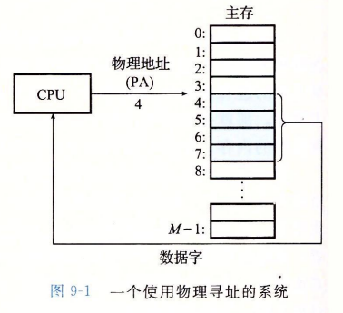
然而现代处理器则使用一种虚拟寻址（virtual addressing）的方式：
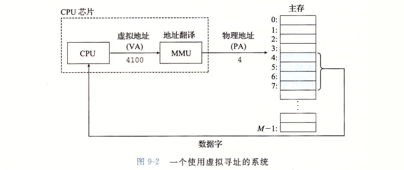
其实就是多了一个MMU地址翻译的中转步骤。MMU叫内存管理单元（Memory Management Unit），它是一个硬件组件，能够利用在主存中的查询表来动态翻译虚拟地址，而查询表的内容由操作系统管理。（是不是就是页表？）
地址空间
可以看作就是一个线性地址空间（因为不存在断裂吧）：0, 1, ⋯, N − 1。
如果是虚拟地址空间（大小为 N ）,那么应该满足 N = 2n，其中现代系统通常支持 n = 32 或 64 位虚拟地址空间。
系统肯定还有一个物理地址空间（大小为 M），事实上不要求是2的幂（但你买的到这种内存条吗）。因此CSAPP为了简化讨论，令 M = 2m。主存中每个字节都有一个选自虚拟地址空间和选自物理地址空间的地址。
虚拟内存作为缓存的工具
可以把主存看做是磁盘的高速缓存。磁盘上的数据被分割成块（和Cache的缓存行类似？），这些块则作为磁盘（较低层）和主存（较高层）之间的传输单元。VM系统则通过将虚拟内存分割为称为虚拟页（Virtual Page, VP）的大小固定的块来处理这个问题。每个虚拟页的大小为 P = 2p字节。类似地，物理内存被分割成物理页（Physical Page, PP），每个物理页的大小也为 P 字节。物理页也被称为页帧（page frame）。
在任意时刻，虚拟页面可被分为三个不相交的子集： - 未分配的：VM系统还未分配的页。没有任何数据与它关联，因此不占用任何磁盘空间。 - 缓存的：当前已缓存在物理内存中的已分配页。 - 未缓存的：未缓存在物理内存中的已分配页。它们被保存在磁盘上，直到需要时才被加载到物理内存中。
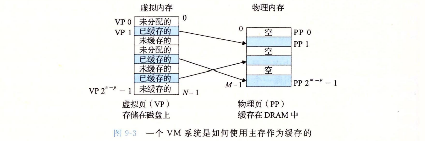
从上图我们可以看出，只有已缓存的页才有VP和PP之间的地址映射关系。
DRAM缓存的组织结构
使用SRAM缓存来描述位于CPU和主存之间的L1、L2和L3缓存，使用DRAM缓存来描述虚拟内存系统的缓存，它在主存中缓存虚拟页。
然而考虑到，DRAM虽然只比SRAM慢大约10倍，但是磁盘要比DRAM慢大约100 000多倍。因此DRAM的不命中相比SRAM要昂贵的多，这导致我们的虚拟页往往很大，通常是 4KB~2MB，且DRAM缓存是全相联的（即任何虚拟页都可以放置在任何的物理页中）。
CSAPP还提到DRAM不命中的替换策略也很重要，但没细说（因为采用了更复杂精密的替换算法）。最后由于磁盘访问时间很长，DRAM缓存总是写回而非直写。
页表
VM系统一定要有种方法来判定虚拟页和物理页之间的地址映射关系。如果一个VP是已缓存的，系统必须确定该页存放在哪个物理页。如果是未缓存的，系统还必须判断这个虚拟页存放在磁盘的哪个位置，然后在物理页中选择一个牺牲页，并将虚拟页从磁盘复制到DRAM中，替换掉这个牺牲页。
这些复杂的功能由软硬件联合提供，包括OS软件、MMU中的地址翻译硬件和一个存放在物理内存中一个叫做页表（page table）的数据结构，页表可以将虚拟页映射到物理页。每次地址翻译硬件将一个虚拟地址转换为物理地址时，都会读取页表。操作系统负责维护页表的内容，以及在磁盘和DRAM之间来回传送页。
下图展示了页表的基本组织结构：
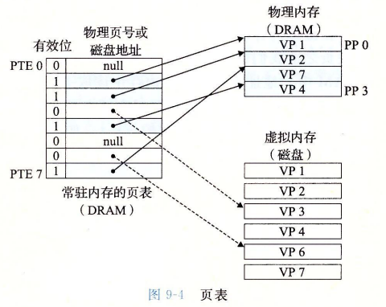
页表就是一个页表条目（Page Table Entry，PTE）的数组。虚拟地址空间中的每个页在页表中一个固定偏移量处都有一个PTE。图中假设一个PTE是由一个有效位（valid bit）和一个 n 位地址字段组成的。
有效位表明该虚拟页当前是否被缓存在DRAM中。如果设置了有效位，那么地址字段则表示DRAM中相应的物理页的起始位置，这个物理页缓存了该虚拟页。如果没设置有效位，那么一个空地址表示这个虚拟页还未被分配。否则这个地址就指向虚拟页在磁盘中的起始地址。
页命中
下图给了一个页命中的例子：
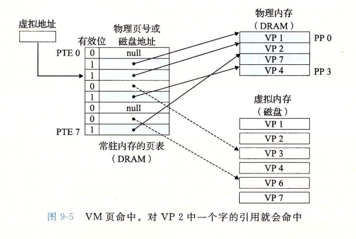
VP2将作为一个索引定位PTE2，并从内存中读取它。因为设置了有效位，故VP2被缓存在DRAM中。使用PTE内的物理内存地址来构造VP2内被访问字的物理地址。
缺页
在虚拟内存的习惯说法中，DRAM缓存不命中被称为缺页（page fault）。下图展示缺页前的页表状态示例：
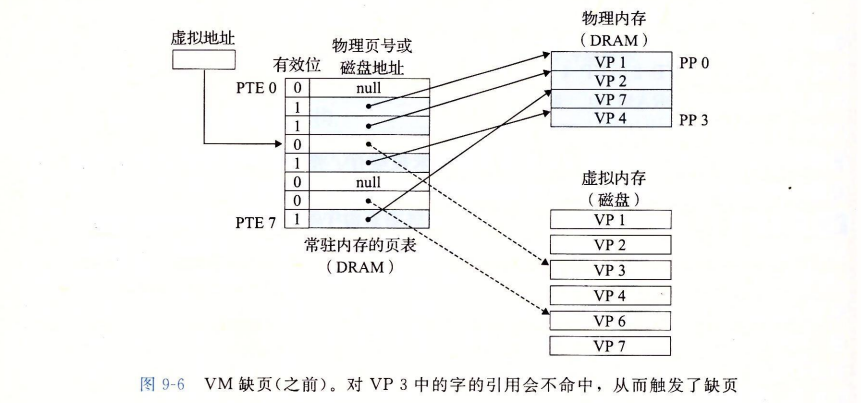
CPU引用了VP3的一个字，VP3并未缓存在DRAM中。地址翻译硬件从内存读取PTE3，发现有效位为0，因此触发一个缺页异常。缺页异常调用内核中的缺页异常处理程序，该程序会选择一个牺牲页，在图里中就是PP3，内部包含VP4。如果VP4被修改了，那么内核会将它复制回磁盘。
接下来，内核从磁盘复制VP3到PP3，更新PTE3，随后返回。当异常处理程序返回时，它会重新启动导致缺页的指令，该指令会将导致缺页的虚拟地址重发送到地址翻译硬件。但是现在，VP3已经在主存中了，那么页命中也能由地址翻译硬件正常处理了。下图展示了缺页处理完成后的页表状态：
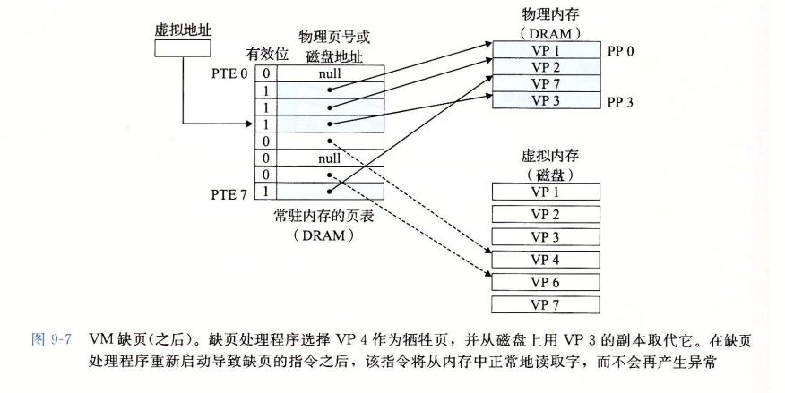
CSAPP漏说了，就是对于PTE4，系统还会将其有效位清零，同时将PTE4的地址字段更新为VP4在磁盘上的位置，以便将来需要时可以重新加载它。
所有现代系统都使用按需页面调度的方式，即直到一个虚拟页被访问时才将它加载到DRAM中。虽然也可以预先加载一些页，但这通常是没有必要的，因为大多数程序具有局部性（locality），即它们倾向于访问最近访问过的页以及与这些页相邻的页。
分配页面
下图展示当操作系统分配一个新的VP时对页表的影响：
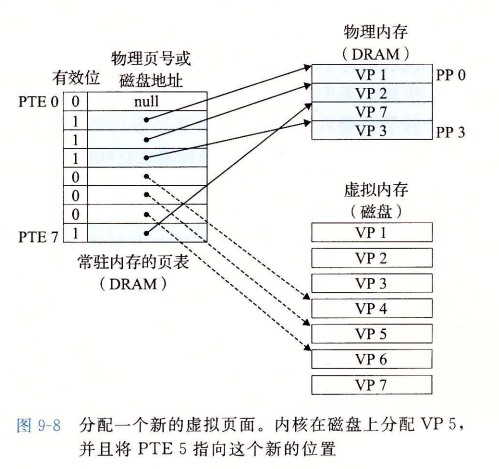
VP5的分配过程是在磁盘空间创建空间，并更新PTE5，使它指向磁盘上这个新创建的页面。VP5的有效位被清零，因为它还未被加载到DRAM中。
局部性
虚拟内存的不命中处罚非常大（前面提到了），但是事实上虚拟内存工作地相当好，这归功于局部性。
尽管在整个运行的过程中程序引用的不同页面的大小会超出物理内存的总大小，但是局部性原则保证在任意时刻，程序趋向在一个较小的活动页面（active page）集合上工作，这个集合叫工作集（working set）或常驻集合（resident set）。在初始开销，也就是将工作集页面调度到内存中后，接下来对这个工作集的引用将导致命中，不会产生额外磁盘流量。
不幸的是，如果工作集超出物理内存的大小，则会进入一种抖动（thrashing）的状态，这时页面将不断地换进换出。因此程序员需要保证程序有好的时间局部性。
虚拟内存作为内存管理的工具
实际上，操作系统为每个进程提供了一个独立的页表（自然也就是一个独立的虚拟空间），举例：
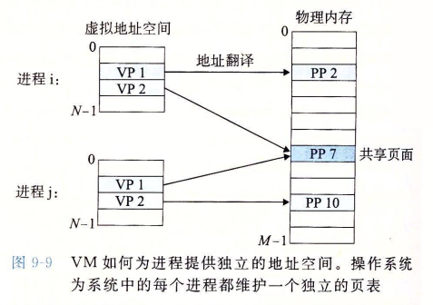
这里我们可以看到多个虚拟页面可以映射到同一个共享物理页面上。
目前可以总结一下，按需页面调度+虚拟内存有以下好处： - 简化链接。独立的地址空间允许每个进程的内存映像使用相同的基本格式，无需管比如代码或数据实际存放在物理内存的何处。之前的CSAPP的章节有给个例子：
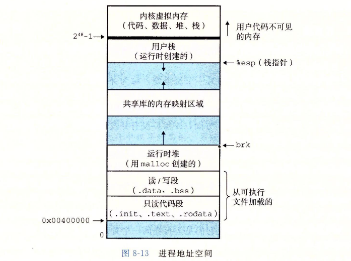
对于64位的地址空间，代码段总是从0x400000开始，数据段在代码段后，中间有一段符合要求的对齐空白。栈占据用户进程地址空间最高的部分,并向下生长。这样的一致性极大地简化了链接器的设计和实现,允许链接器生成完全链接的可执行文件,这些可执行文件是独立于物理内存中代码和数据的最终位置的。
- 简化加载。要把目标文件中.text 和.data 节加载到一个新创建的进程中,Linux 加载器为代码和数据段分配虚拟页,把它们标记为无效的(即未被缓存的),将页表条目指向目标文件中适当的位置。后续按需自动调入页面。
- 简化共享。在一些情况中,还是需要进程来共享代码和数据。例如,每个进程必须调用相同的操作系统内核代码,而每个C程序都会调用C标准库中的程序,比如 printf。操作系统通过将不同进程中适当的虚拟页面映射到相同的物理页面,从而安排多个进程共享这部分代码的一个副本,而不是在每个进程中都包括单独的内核和C标准库的副本。
- 简化内存分配。当一个运行在用户进程中的程序要求额外的堆空间时(如调用 malloc 的结果),操作系统分配一个适当数字(例如k)个连续的虚拟内存页面,并且将它们映射到物理内存中任意位置的k个任意的物理页面。
虚拟内存作为内存保护的工具
任何现代计算机系统必须为操作系统提供手段来控制对内存系统的访问。例如不应该允许一个用户进程修改它的只读代码段，而且也不应该允许它读或修改任何内核中的代码和数据结构。不应该允许它读或者写其他进程的私有内存,并且不允许它修改任何与其他进程共享的虚拟页面,除非所有的共享者都显式地允许它这么做(通过调用明确的进程间通信系统调用)。
虚拟内存区分不同进程的私有内存。不过，地址翻译机制可以以一种自然的方式扩展到提供更好的访问控制，因为每次 CPU 生 成一个地址时,地址翻译硬件都会读一个PTE,所以通过在PTE上添加一些额外的许可位来控制对一个虚拟页面内容的访问十分简单：
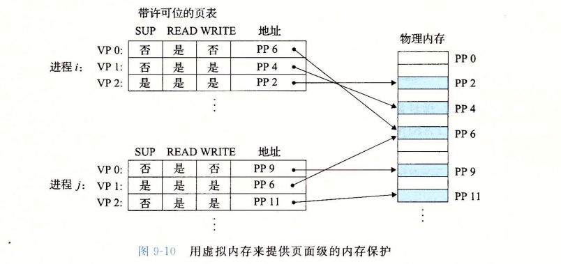
上面示意图中每个PTE添加了三个许可位。SUP 位表示进程是否必须运行在内核(超级用户)模式下才能访问该页。运行在内核模式中的进程可以访问任何页面,但是运行在用户模式中的进程只允许访问那些 SUP 为0的页面。READ 位和 WRITE 位控制对页面的读和写访问。
如果一条指令违反了许可条件，那么CPU会触发一个一般保护故障，将控制传递给内核的异常处理程序。Linux shell一般将这种异常报告为段错误(segmentation fault)。
地址翻译
CSAPP首先给了一个表，就是一些常用的符号：
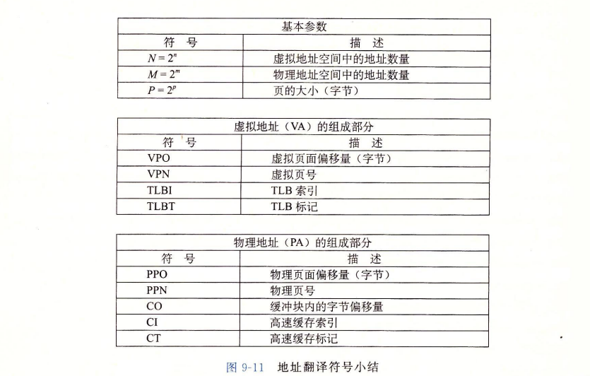
地址翻译就是一个 N 元素的虚拟地址空间中的元素和一个 M 元素的物理地址空间的元素之间的映射：
MAP : VAS → PAS ∪ ⌀.
下图展示了MMU如何利用页表来实现这种映射。
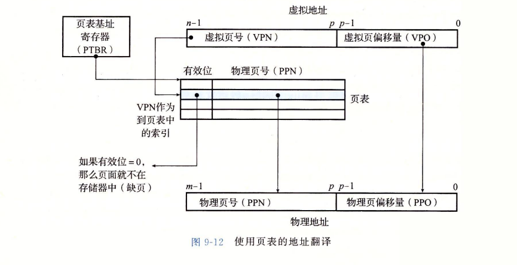
CPU中的一个控制寄存器，页表基址寄存器（Page Table Base Register，PTBR），包含了当前页表的起始地址。n 位的虚拟地址包含两个部分：一个 p 位的虚拟页面偏移（Virtual Page Offset，VPO）和一个 n − p 位的虚拟页号（Virtual Page Number，VPN）。地址翻译硬件使用VPN作为索引来访问页表中的PTE。将页表条目中的物理页号（Physical Page Number，PPN）与虚拟页面偏移VPO组合起来就得到了物理地址。
下图展示了当页面命中和缺页时，CPU硬件执行步骤：
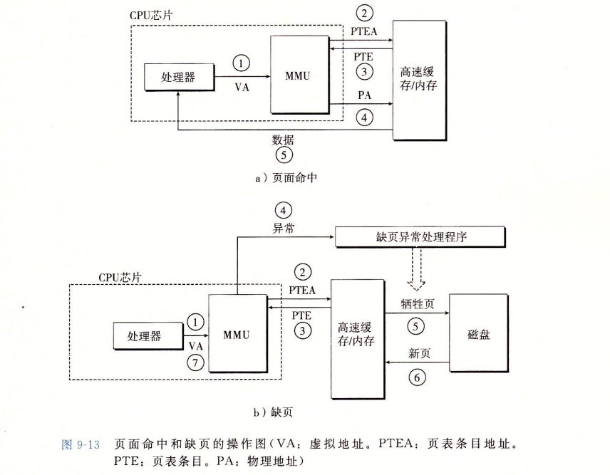
页面命中具体步骤： 1. 处理器生成一个虚拟地址,并把它传送给 MMU 2. MMU生成 PTE 地址,并从高速缓存/主存请求得到它。 3. 高速缓存/主存向MMU 返回 PTE。 4. MMU 构造物理地址,并把它传送给高速缓存/主存。 5. 高速缓存/主存返回所请求的数据字给处理器。
页面命中的过程完全由硬件处理，但是不同的是，处理缺页需要硬件和操作系统内核协作完成。具体步骤如下： 1. 处理器生成一个虚拟地址,并把它传送给 MMU 2. MMU生成 PTE 地址,并从高速缓存/主存请求得到它。 3. 高速缓存/主存向 MMU 返回 PTE。（前三步和页面命中的情况一样） 4. PTE 中的有效位是零,所以 MMU 触发了一次异常,传递 CPU 中的控制到操作系统内核中的缺页异常处理程序。 5. 缺页处理程序确定出物理内存中的牺牲页,如果这个页面已经被修改了,则把它换出到磁盘。 6. 缺页处理程序页面调入新的页面,并更新内存中的PTE。 7. 缺页处理程序返回到原来的进程,再次执行导致缺页的指令。CPU 将引起缺页的虚拟地址重新发送给 MMU。因为虚拟页面现在缓存在物理内存中,所以就会命中。